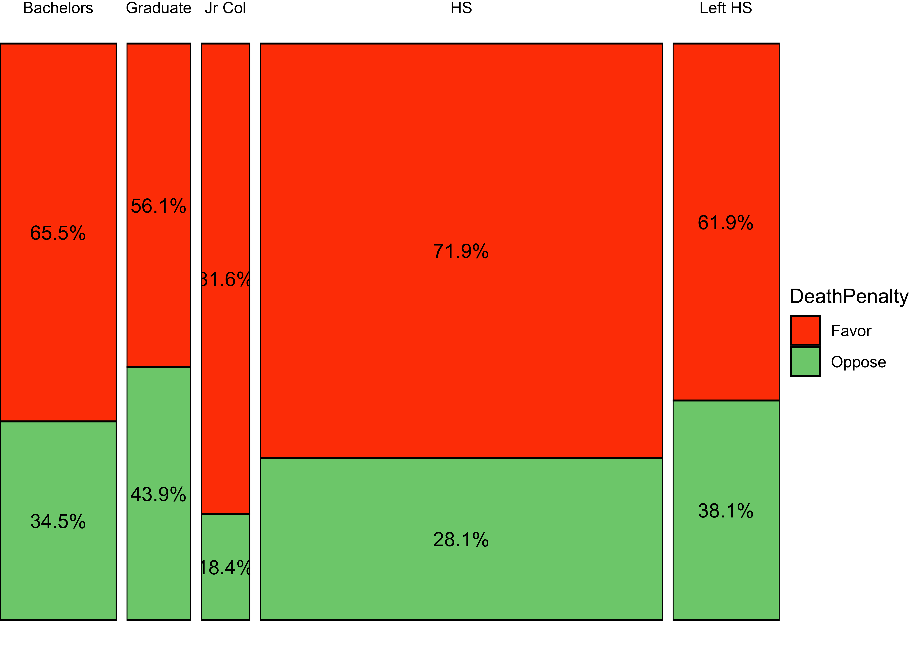

🃏 Inferences Test for Two Proportions
We saw from the diagram created by Allen Downey that there is only one test! We will now use this philosophy to develop a technique that allows us to mechanize several Statistical Models in that way, with nearly identical code.
We will use two packages in R, mosaic and the relatively new infer package, to develop our intuition for what are called permutation based statistical tests.
GSS2002 dataset
GSS2002 dataset
We can extend this idea to multiple proportions too.
Let us try a dataset with Qualitative / Categorical data. This is the General Social Survey GSS dataset from the resampledata package, and we have people with different levels of Education stating their opinion on the Death Penalty. We want to know if these two Categorical variables have a correlation, i.e. can the opinions in favour of the Death Penalty be explained by the Education level?
Since data is Categorical ( both variables ), we need to take counts in a table, and then implement a chi-square test. In the test, we will permute the Education variable to see if we can see how significant its effect size is.
Rows: 2,765
Columns: 21
$ ID <int> 1, 2, 3, 4, 5, 6, 7, 8, 9, 10, 11, 12, 13, 14, 15, 16, 1…
$ Region <fct> South Central, South Central, South Central, South Centr…
$ Gender <fct> Female, Male, Female, Female, Male, Male, Female, Female…
$ Race <fct> White, White, White, White, White, White, White, White, …
$ Education <fct> HS, Bachelors, HS, Left HS, Left HS, HS, Bachelors, HS, …
$ Marital <fct> Divorced, Married, Separated, Divorced, Divorced, Divorc…
$ Religion <fct> Inter-nondenominational, Protestant, Protestant, Protest…
$ Happy <fct> Pretty happy, Pretty happy, NA, NA, NA, Pretty happy, NA…
$ Income <fct> 30000-34999, 75000-89999, 35000-39999, 50000-59999, 4000…
$ PolParty <fct> "Strong Rep", "Not Str Rep", "Strong Rep", "Ind, Near De…
$ Politics <fct> Conservative, Conservative, NA, NA, NA, Conservative, NA…
$ Marijuana <fct> NA, Not legal, NA, NA, NA, NA, NA, NA, Legal, NA, NA, NA…
$ DeathPenalty <fct> Favor, Favor, NA, NA, NA, Favor, NA, NA, Favor, NA, NA, …
$ OwnGun <fct> No, Yes, NA, NA, NA, Yes, NA, NA, Yes, NA, NA, NA, NA, N…
$ GunLaw <fct> Favor, Oppose, NA, NA, NA, Oppose, NA, NA, Oppose, NA, N…
$ SpendMilitary <fct> Too little, About right, NA, About right, NA, Too little…
$ SpendEduc <fct> Too little, Too little, NA, Too little, NA, Too little, …
$ SpendEnv <fct> About right, About right, NA, Too little, NA, Too little…
$ SpendSci <fct> About right, About right, NA, Too little, NA, Too little…
$ Pres00 <fct> Bush, Bush, Bush, NA, NA, Bush, Bush, Bush, Bush, NA, NA…
$ Postlife <fct> Yes, Yes, NA, NA, NA, Yes, NA, NA, Yes, NA, NA, NA, NA, …inspect(GSS2002)
categorical variables:
name class levels n missing
1 Region factor 7 2765 0
2 Gender factor 2 2765 0
3 Race factor 3 2765 0
4 Education factor 5 2760 5
5 Marital factor 5 2765 0
6 Religion factor 13 2746 19
7 Happy factor 3 1369 1396
8 Income factor 24 1875 890
9 PolParty factor 8 2729 36
10 Politics factor 7 1331 1434
11 Marijuana factor 2 851 1914
12 DeathPenalty factor 2 1308 1457
13 OwnGun factor 3 924 1841
14 GunLaw factor 2 916 1849
15 SpendMilitary factor 3 1324 1441
16 SpendEduc factor 3 1343 1422
17 SpendEnv factor 3 1322 1443
18 SpendSci factor 3 1266 1499
19 Pres00 factor 5 1749 1016
20 Postlife factor 2 1211 1554
distribution
1 North Central (24.7%) ...
2 Female (55.6%), Male (44.4%)
3 White (79.1%), Black (14.8%) ...
4 HS (53.8%), Bachelors (16.1%) ...
5 Married (45.9%), Never Married (25.6%) ...
6 Protestant (53.2%), Catholic (24.5%) ...
7 Pretty happy (57.3%) ...
8 40000-49999 (9.1%) ...
9 Ind (19.3%), Not Str Dem (18.9%) ...
10 Moderate (39.2%), Conservative (15.8%) ...
11 Not legal (64%), Legal (36%)
12 Favor (68.7%), Oppose (31.3%)
13 No (65.5%), Yes (33.5%) ...
14 Favor (80.5%), Oppose (19.5%)
15 About right (46.5%) ...
16 Too little (73.9%) ...
17 Too little (60%) ...
18 About right (49.7%) ...
19 Bush (50.6%), Gore (44.7%) ...
20 Yes (80.5%), No (19.5%)
quantitative variables:
name class min Q1 median Q3 max mean sd n missing
1 ID integer 1 692 1383 2074 2765 1383 798.3311 2765 0skimr::skim(GSS2002)| Name | GSS2002 |
| Number of rows | 2765 |
| Number of columns | 21 |
| _______________________ | |
| Column type frequency: | |
| factor | 20 |
| numeric | 1 |
| ________________________ | |
| Group variables | None |
Variable type: factor
| skim_variable | n_missing | complete_rate | ordered | n_unique | top_counts |
|---|---|---|---|---|---|
| Region | 0 | 1.00 | FALSE | 7 | Nor: 684, Sou: 486, Sou: 471, Mid: 435 |
| Gender | 0 | 1.00 | FALSE | 2 | Fem: 1537, Mal: 1228 |
| Race | 0 | 1.00 | FALSE | 3 | Whi: 2188, Bla: 410, Oth: 167 |
| Education | 5 | 1.00 | FALSE | 5 | HS: 1485, Bac: 443, Lef: 400, Gra: 230 |
| Marital | 0 | 1.00 | FALSE | 5 | Mar: 1269, Nev: 708, Div: 445, Wid: 247 |
| Religion | 19 | 0.99 | FALSE | 13 | Pro: 1460, Cat: 673, Non: 379, Chr: 65 |
| Happy | 1396 | 0.50 | FALSE | 3 | Pre: 784, Ver: 415, Not: 170 |
| Income | 890 | 0.68 | FALSE | 24 | 400: 170, 300: 166, 250: 140, 500: 136 |
| PolParty | 36 | 0.99 | FALSE | 8 | Ind: 528, Not: 515, Not: 449, Str: 408 |
| Politics | 1434 | 0.48 | FALSE | 7 | Mod: 522, Con: 210, Sli: 209, Sli: 159 |
| Marijuana | 1914 | 0.31 | FALSE | 2 | Not: 545, Leg: 306 |
| DeathPenalty | 1457 | 0.47 | FALSE | 2 | Fav: 899, Opp: 409 |
| OwnGun | 1841 | 0.33 | FALSE | 3 | No: 605, Yes: 310, Ref: 9 |
| GunLaw | 1849 | 0.33 | FALSE | 2 | Fav: 737, Opp: 179 |
| SpendMilitary | 1441 | 0.48 | FALSE | 3 | Abo: 615, Too: 414, Too: 295 |
| SpendEduc | 1422 | 0.49 | FALSE | 3 | Too: 992, Abo: 278, Too: 73 |
| SpendEnv | 1443 | 0.48 | FALSE | 3 | Too: 793, Abo: 439, Too: 90 |
| SpendSci | 1499 | 0.46 | FALSE | 3 | Abo: 629, Too: 461, Too: 176 |
| Pres00 | 1016 | 0.63 | FALSE | 5 | Bus: 885, Gor: 781, Nad: 57, Oth: 16 |
| Postlife | 1554 | 0.44 | FALSE | 2 | Yes: 975, No: 236 |
Variable type: numeric
| skim_variable | n_missing | complete_rate | mean | sd | p0 | p25 | p50 | p75 | p100 | hist |
|---|---|---|---|---|---|---|---|---|---|---|
| ID | 0 | 1 | 1383 | 798.33 | 1 | 692 | 1383 | 2074 | 2765 | ▇▇▇▇▇ |
Note how all variables are Categorical !! Education has five levels, and of course DeathPenalty has three:
Let us drop NA entries in Education and Death Penalty and set up a Contingency Table.
gss2002 <- GSS2002 %>%
dplyr::select(Education, DeathPenalty) %>%
tidyr::drop_na(., c(Education, DeathPenalty))
gss_table <- mosaic::tally(DeathPenalty ~ Education, data = gss2002)
gss_table %>%
addmargins() Education
DeathPenalty Left HS HS Jr Col Bachelors Graduate Sum
Favor 117 511 71 135 64 898
Oppose 72 200 16 71 50 409
Sum 189 711 87 206 114 1307Contingency Table Plots
The Contingency Table can be plotted, as we have seen, using a mosaic plot using several packages:
Needs a little more work, to convert the Contingency Table into a tibble:
# https://stackoverflow.com/questions/19233365/how-to-create-a-marimekko-mosaic-plot-in-ggplot2
gss_summary <- gss2002 %>%
mutate(
Education = factor(
Education,
levels = c("Bachelors", "Graduate", "Jr Col", "HS", "Left HS"),
labels = c("Bachelors", "Graduate", "Jr Col", "HS", "Left HS")
),
DeathPenalty = as.factor(DeathPenalty)
) %>%
group_by(Education, DeathPenalty) %>%
summarise(count = n()) %>% # This is good for a chisq test
# Add two more columns to facilitate mosaic/Marrimekko Plot
mutate(edu_count = sum(count),
edu_prop = count / sum(count)) %>%
ungroup()
gf_col(edu_prop ~ Education, data = gss_summary,
width = ~ edu_count,
fill = ~ DeathPenalty,
stat = "identity",
position = "fill",
color = "black") %>%
gf_text(edu_prop ~ Education,
label = ~ scales::percent(edu_prop),
position = position_stack(vjust = 0.5)) %>%
gf_facet_grid(~ Education,
scales = "free_x",
space = "free_x") %>%
gf_theme(scale_fill_manual(values = c("orangered", "palegreen3"))) %>%
gf_theme(theme_void())
vcd::mosaic(gss_table, gp = shading_hsv)
#library(ggmosaic)
ggplot(data = gss2002) +
geom_mosaic(aes(x = product(DeathPenalty, Education),
fill = DeathPenalty)) + theme_minimal()
Observed Statistic: the \(X^2\) metric
When there are multiple proportions involved, the \(X^2\) test is what is used.
Let us look at the Contingency Table that we have:
| Left HS | HS | Jr Col | Bachelors | Graduate | Sum | |
|---|---|---|---|---|---|---|
| Favor | 117 | 511 | 71 | 135 | 64 | 898 |
| Oppose | 72 | 200 | 16 | 71 | 50 | 409 |
| Sum | 189 | 711 | 87 | 206 | 114 | 1307 |
In the chi-square test, we check whether the two ( or more ) categorical variables are independent. To do this we perform a simple check on the Contingency Table. We first re-compute the totals in each row and column, based on what we could expect if there was independence (NULL Hypothesis). If the two variables were independent, then there should be no difference between real and expected scores.
How do we know what scores to expect?
Consider the entry in location (1,1): 117. The number of expected entries there is probability of an entry landing in that square times the total number of entries:
Proceeding in this way for all the 15 entries in the Contingency Table, we get the “Expected” Contingency Table. Here are both tables for comparison:
| Left HS | HS | Jr Col | Bachelors | Graduate | Sum | |
|---|---|---|---|---|---|---|
| Favor | 130 | 489 | 60 | 142 | 78 | 898 |
| Oppose | 59 | 222 | 27 | 64 | 36 | 409 |
| Sum | 189 | 711 | 87 | 206 | 114 | 1307 |
| Left HS | HS | Jr Col | Bachelors | Graduate | Sum | |
|---|---|---|---|---|---|---|
| Favor | 117 | 511 | 71 | 135 | 64 | 898 |
| Oppose | 72 | 200 | 16 | 71 | 50 | 409 |
| Sum | 189 | 711 | 87 | 206 | 114 | 1307 |
The \(X^2\) statistic is sum of squared differences between Observed and Expected scores, scaled by the Expected Scores. For location [1,1] this would be: \((117-130)^2/130\). Do try to compute all of these and the \(X^2\) statistic by hand !!
Let us now perform the base chisq test: We need a table and then the chisq test:
# gss_table <- tally(DeathPenalty ~ Education, data = gss2002)
# gss_table
# Get the observed chi-square statistic
observedChi2 <- mosaic::chisq(tally(DeathPenalty ~ Education, data = gss2002))
observedChi2X.squared
23.45093 # Actual chi-square test
stats::chisq.test(tally(DeathPenalty ~ Education, data = gss2002))
Pearson's Chi-squared test
data: tally(DeathPenalty ~ Education, data = gss2002)
X-squared = 23.451, df = 4, p-value = 0.0001029We see that our observed \(X^2 = 23.45\).
Hypotheses Definition
What would our Hypotheses be?
\(H_0: \text{Education does not affect votes for Death Penalty}\) \(H_a: \text{Education affects votes for Death Penalty}\)
Permutation Test for Education
We should now repeat the test with permutations on Education:
null_chisq <- do(9999) *
chisq.test(tally(DeathPenalty ~ shuffle(Education),
data = gss2002))
head(null_chisq)gf_histogram( ~ X.squared, data = null_chisq) %>%
gf_vline(xintercept = observedChi2,
color = "red") %>%
gf_theme(theme = theme_classic())
prop1(~ X.squared >= observedChi2, data = null_chisq)prop_TRUE
2e-04 The p-value is well below our threshold of \(0.05\), so we would conclude that Education has a significant effect on DeathPenalty opinion!
In our basic \(X^2\) test, we calculate the test statistic of \(X^2\) and look up a theoretical null distribution for that statistic, and see how unlikely our observed value is.
Why would a permutation test be a good idea here? With a permutation test, there are no assumptions of the null distribution: this is computed based on real data. We note in passing that, in this case, since the number of cases in each cell of the Contingency Table are fairly high ( >= 5) the resulting NULL distribution is of the \(X^2\) variety.
OpenIntro Modern Statistics: Chapter 17
Exploring the underlying theory of the chi-square test through simulation - part 1 https://www.rdatagen.net/post/a-little-intuition-and-simulation-behind-the-chi-square-test-of-independence/
Exploring the underlying theory of the chi-square test through simulation - part 2 https://www.rdatagen.net/post/a-little-intuition-and-simulation-behind-the-chi-square-test-of-independence-part-2/
Citation
@online{v.2022,
author = {V., Arvind},
title = {🃏 {Inferences} {Test} for {Two} {Proportions}},
date = {2022-11-10},
url = {https://av-quarto.netlify.app/content/courses/Analytics/Inference/Modules/190-TwoProp/two-props.html},
langid = {en},
abstract = {Inference Test for Two Proportions}
}